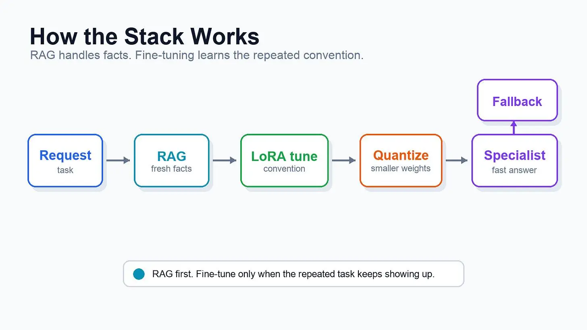
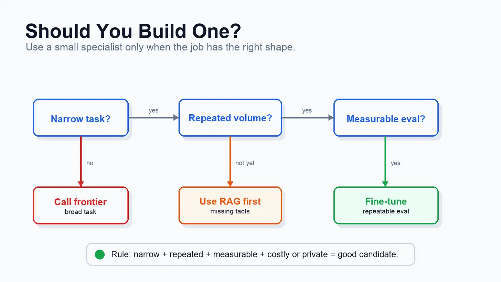

Vertical Small LLMs: A Deep Dive
#166: How a fine-tuned 3-billion-parameter model beats today’s frontier models at one job, and how to build one this weekend

§
I shipped this new feature:
→ Read support ticket,
→ Choose the right tag,
→ Then route the request to right person.The simplest way to build the feature is to call a frontier model through an API…
Yet this approach doesn’t scale because of API costs, latency, and data sensitivity risks. Plus, the model isn't solving a HARD reasoning problem. Instead, it's making the same decision a thousand times a day.
So I tried a “boring” alternative approach:
Fine-tune a 3 billion parameter model on my desk in 74 minutes.
On one legal-labeling task, it scored 81.7% -- ahead of Claude Sonnet 4.6 at 77% and GPT-5.5 at 76.7%.
i.e., the small model is NOT smarter than a frontier model. But a specialist and does one narrow task extremely well.
Onward.
§
[Webinar] Can you prove AI is working?

AI is in your engineering workflow. While the token spend shows it, the throughput doesn’t. The human is very much still in the loop, and that’s a context problem.
Join live on Aug 19 (FREE) to learn:
The 4 metrics to measure where AI gains leak out before production.
The 8 stages of context maturity, the specific walls capping your metrics, and a free tool to pinpoint where your team is.
Why more MCPs and bigger context windows aren’t enough, and what it takes to get real value from your agents.
(Thanks to Unblocked for partnering on this newsletter.)
§
I want to introduce Kukeshajanth Kodeswaran as the guest author.

He’s the co-founder of modalis and Director of Engineering at Launchpad.AI, where he’s shipped AI systems running in production at Nike, Mr. Cooper, and Levi’s.
If you want to learn to build production-grade AI agents, I highly recommend his live Maven bootcamp: Become an Agentic AI Engineer and Master AI Agents for Business. He teaches it with Dr. Ryan Ahmed - he also co-authored the #1 Claude course on Udemy, and the Maven cohorts are rated 4.9.
(You’ll also get an exclusive 20% discount when you use the link.)
§
Here’s what’s inside this newsletter:
Why a tiny AI can outperform a large one. The narrow class of problems where a 3B model can beat frontier models, where it falls short, and why size alone doesn’t decide the winner.
The specialist’s toolbox. Retrieval-Augmented Generation (RAG), Low-Rank Adaptation (LoRA), distillation, and quantization; what each technique solves and when each belongs in your stack.
Production architecture quietly replacing one-model-fits-all. Where small models handle routine work, where frontier models still earn their cost, and why routing between them changes economics.
A real benchmark from start to finish. A fine-tuned SmolLM3 model, a legal contract dataset, head-to-head results against GPT-5.5 and Claude Sonnet 4.6, and what the numbers actually mean.
Decision framework for your next AI project. Which workloads deserve a vertical small LLM, which should stay with a frontier model, and where you’ll spend time and money without seeing better results.
Let’s keep going!
§
What Makes a Small AI Different?
The idea comes down to two words: small & vertical.
A small language model usually has between 1 and 8 billion parameters. i.e., it’s small enough to run on hardware you already own. A 3 billion-parameter model can run on a gaming GPU, and many models in this range even run on a modern laptop. But frontier models are much larger. They run in cloud data centers, and you access them through an API.
A vertical model is trained for “one” domain. Instead of becoming good at every task, it becomes extremely good at one. For example, banking support, contract review, medical Q&A.
Think of it like hiring people:
A frontier model is a general practitioner who knows a little about many subjects. A vertical small model is like a heart surgeon. You wouldn’t ask a surgeon to file your taxes, and you wouldn’t ask a general practitioner to perform heart surgery. Each is built for a different job.
The same idea applies to AI.
If your company workflow keeps making the same decision over & over, a vertical small model can outperform a much larger general-purpose model on that specific task.
IMPORTANT: small doesn’t mean weak… it just means “focused”.
§
Why Companies Build Their Own Small Models
If frontier models are so capable, why do companies build their own small models?
Here’s why:
1. Cost
A frontier model is inexpensive1 for a few requests.
The problem appears when your application handles millions of them every day. Suppose every support ticket, insurance claim, or contract goes through AI. Even a small cost per request adds up quickly.
A self-hosted small model, or an inexpensive hosted one (such as Groq), can reduce inference costs by 25-60 times for these repetitive tasks.
For a high-volume system, this can save thousands or even millions of dollars each year.
2. Speed
Latency matters just as much.
When you call a frontier model, every request travels across the internet to a remote data center before the model can respond. The network trip often takes longer than the model’s actual computation2.
A small 3B model running on your local server avoids this extra trip.
A background check company moved its high-volume background check system from a hosted frontier model to a fine-tuned small model running locally.
This reduced their response times from several seconds to less than a second3.
3. Data Privacy
Sometimes the decision has nothing to do with cost or speed.
Many banks, hospitals, government agencies, and law firms cannot send sensitive customer data to an external AI service because of legal, regulatory, and/or company requirements.
In these cases, running an open model on their own infrastructure lets them keep the data inside their own environment while still using AI.
For these organizations, the question isn’t, “Which model is cheaper?” Instead, “Which model lets us use AI without our data leaving the building?”
§
How Small Model Works
Building a small model is usually much simpler than most people expect…
You don’t train a model from scratch. Instead, you start with a small open base model and improve it using one/more of these techniques4:
1. Retrieval-Augmented Generation (RAG)
The model searches your company’s documents before answering a question.
Instead of relying only on what it learned during training, it also uses the latest information from your knowledge base.
For “most” applications, this is enough. No extra training required!
2. Fine-Tuning
If the model keeps making the same type of decision, you can teach it using “examples” from your data.
The most common approach is Low-Rank Adaptation (LoRA). Instead of retraining all billions of model parameters, LoRA trains only a small set of new parameters while leaving the original model unchanged.
This makes fine-tuning cheaper and faster. A model that normally requires many GPUs can be fine-tuned on a single GPU in about an hour.
3. Distillation
A large, powerful model generates high-quality answers.
Those answers then become training data for a smaller model. So the smaller model learns to produce similar results at a fraction of the cost5.
4. Quantization
After the model is trained, you can shrink it by storing its parameters with lower numerical precision, so it fits on smaller hardware.
For example, converting a 7-billion-parameter model from 16-bit to 4-bit precision reduces its size from about 14 GB to around 4.5 GB, with little loss in accuracy.
Putting It Together
A typical production setup looks like this:
A small model receives the request.
RAG provides the latest company information.
LoRA fine-tune teaches the model your specific task.
Quantization reduces the hardware needed to run it.
If the request is too difficult, it’s forwarded to a larger frontier model.
This approach gives you the speed and low cost of a small model while still having a powerful model available for the few requests that need it.

§
Where Small Models Fall Short
Small models are powerful, but they’re not the right tool for every job:
1. They struggle with complex tasks
A specialized model works best if it repeats the same type of decision over and over.
Give it a large, open-ended task, like designing a software system or writing a complex database migration, and its performance drops quickly.
For example, on real-world coding benchmarks, fine-tuned small coding models score around 20% to 36%, while today’s frontier models score closer to 80% to 88%.
2. They can still hallucinate
A specialized model is not automatically more accurate.
Legal AI systems built specifically for lawyers still invent facts. Popular legal research tools, such as Lexis+ AI and Westlaw AI6, produced hallucinations in 17% to 33% of their answers.
Plus models tuned specifically for medicine gave hallucination-free answers only 51% of the time, while general models hit 77%.
Specialized does not always mean more reliable.
So when a vendor says a domain model is more reliable because it’s specialized, ask for the numbers and evaluate a model on your own data.
3. Fine-tuning has tradeoffs
Fine-tuning teaches a model new skills, but it can also weaken existing ones.
The model would become better at your task while becoming worse at general knowledge/reasoning. Plus, fine-tuning can unintentionally reduce a model’s built-in safety behavior, even when the training data itself is harmless.
Every time you fine-tune a model, you must test it again before putting it into production.
4. Benchmarks don’t tell the entire story
A small model can have a good benchmark score and still perform poorly for your use case.
Sometimes models get a high score because they have already seen similar benchmark questions during training. When researchers evaluate them on completely “new data”, the scores can drop significantly.
So it’s very important to benchmark your own and perform well on the real tasks your users care about
§
How to Combine Small and Large Models
The goal is not to make a small model do everything.
Instead, the goal is to use the correct model for each request.
Most production systems run both a small model and a frontier model together. The small model handles the (90%) common requests, while the frontier model takes over when the task (10%) is too difficult.
Let’s dive in!
1. Model Routing
The simplest approach is model routing.
Every request goes to the (cheap) small model first. If the model is confident, it returns its answer immediately. If its confidence falls below a threshold, the request is forwarded to a frontier model instead.
Open-source model “routers” follow this approach.
They can achieve about 95% of the quality of a frontier model while reducing inference costs by roughly 85%.
2. Speculative Decoding
Another optimization technique is speculative decoding.
The small model generates a draft response first. Instead of generating the entire answer from scratch, the frontier model verifies the draft and corrects it if necessary.
Because checking a draft is faster than writing one from scratch, speculative decoding can improve speed by around 3-4 times while producing the same final output.
3. On-Device AI
The same idea also appears on mobile devices.
Apple Intelligence uses a (3B) small model running directly on the device for everyday tasks. Only requests that need more reasoning/external knowledge are sent to larger models in the cloud.
This reduces latency, lowers cloud costs, and keeps more user data on the device.
4. Measure Before You Ship
None of these techniques matter if you don’t evaluate your model properly.
Don’t rely on public benchmarks alone. Build your own held-out test set7 using real-world examples from your app, and ensure the model has never seen those examples during training.
This is the only reliable way to know whether your model is improving or simply performing well on familiar benchmarks.
(I followed the same process for the experiment later in this newsletter, and I’ll show you exactly how...)
§
Know someone who wants to learn system design? Consider gifting a subscription:
§
Where Small Models Work Best
Small models work best when the job is simple, repetitive, and happens thousands or millions of times.
Instead of solving a new problem every time, they make the same type of decision again & again.
Let’s look at some use cases:
1. Support Tickets
A customer sends a support message.
The model decides which team should handle it and forwards it to the right place. The task is always the same; the volume is high, and the potential answers are limited. This is exactly the kind of job where a small model can outperform a large model.
A model with one billion parameters (or less) beat GPT-5 on this task.
2. Contract Review
Many companies use AI to find specific information in contracts.
For example:
Find the termination clause.
Extract the liability limit.
Identify the renewal date.
The model isn’t trying to understand every detail of the contract.
Instead, it’s looking for the same pieces of information in documents that all follow a similar structure. This is another task where a specialized small model can outperform GPT-5.
(I’ll use the example later in this newsletter…)
3. Regulated Industries
Small models are also a good fit for industries such as healthcare, finance, and law.
In many cases, sensitive customer data cannot be sent to an external AI service because of legal, regulatory, and/or company requirements. Running a small model on your own infrastructure keeps the data inside your environment.
These applications also focus on a narrow domain.
The model doesn’t need to know everything on the internet. It only needs to perform well on the specific tasks your organization asks it to do every day.
§
Why Run Your Own Model
Running your own small model isn’t just about saving money.
It also gives you more control over how your AI system works.
Let’s dive in!
1. Lower Costs
When you use a frontier model through an API, you pay for every request and every token it processes. If your usage grows, your bill grows too…
With your own model, the major costs are the hardware and electricity needed to run it. Whether it handles one thousand requests or one million, those costs stay much more predictable.
2. Faster Responses
A self-hosted model runs on your own infrastructure.
Your requests don’t need to travel to a remote data center, so responses are often faster. You also avoid external rate limits and have full control over how the model is deployed and optimized.
3. Full Control
You control the model, infrastructure, and data.
The model runs on your own machines, so sensitive information never has to leave your environment. This is especially important for organizations such as banks, hospitals, and government agencies, where customer data often cannot be sent to an external AI service.
§
What You Need to Know
Running your own small model has clear benefits, but it also comes with extra work:
1. Small Models Have Limits
A specialized model is designed for one specific job.
This is why it performs so well. But if you give it a completely different task, its performance can drop quickly. When it happens, you need to send the request to a larger frontier model instead.
That’s why most production systems use both.
2. You Have More to Manage
Using one frontier API is simple.
Running your own models is not. Each model needs its own version, its own eval set, its own deployment, and ongoing monitoring to make sure performance doesn’t degrade as your data changes over time.
As you add more vertical small models, the “operational” work grows too.
3. Fine-Tuning Requires Testing
Fine-tuning teaches a model your specific task, but it can also reduce its ability to perform other tasks.
Also fine-tuning can unintentionally weaken a model’s built-in safety behavior, even when the training data itself is harmless.
This is why you should always evaluate a model after fine-tuning.
Don’t assume it is automatically ready for production just because it performs well during training.
§
Know someone who wants to learn system design? Consider gifting a subscription:
§
Putting It to Test
We saw vertical small models can outperform large models on narrow tasks.
Researchers have shown this in medicine, document processing, and customer support8. But the pattern is always the same: task is focused, repetitive, and well defined. The goal is not to build a smarter model. Instead, it’s building one that’s better at one job.
I wanted to test this for myself.
So I trained a small language model on my own computer using NVIDIA’s DGX Spark, a compact AI workstation, and compared it with today’s frontier models.
Here’s exactly what I built:
The Dataset
I used LEDGAR, a public dataset containing 80,000+ real contract clauses taken from public company filings.
Each clause belongs to one of 100 different clause types, such as termination, liability, confidentiality, or governing law.
This makes it a challenging benchmark for two reasons:
First, many clause types look very similar, so the model has to learn subtle differences instead of guessing from keywords.
Second, the dataset is highly unbalanced. Some clause types appear thousands of times, while others appear only a handful of times. This long-tail distribution makes the classification task much harder than it first appears.

I built the pipeline in five steps:
1. Split the data
I split the dataset into 60,000 training examples and 10,000 test examples. The two sets were completely separate, so none of the test clauses appeared in the training data.
2. Fine-tune the model
I fine-tuned SmolLM3, an open 3-billion-parameter model, using 4,000 training clauses on the DGX Spark (in about 74 minutes).
IMPORTANT: I didn’t include the label list of all 100 clause types in the prompt. The model learned those categories directly from the training data.
3. Create a final test set
From the test split, I randomly selected 300 clauses using a fixed random seed.
These examples were never used during training, making them a fair way to measure how well each model generalized to new data.
4. Compare four models
I evaluated four different models on the same 300 clauses:
The original SmolLM3 base model
My fine-tuned SmolLM3
Claude Sonnet 4.6
GPT-5.5
The frontier models received all 100 clause labels in their prompt. My fine-tuned model received none because it had already learned the labels during training.
5. Measure accuracy
Each model predicted a clause type for every example.
I mapped each prediction to the closest valid label and compared it with the correct answer. Every model was evaluated using the same scoring process, making the comparison as fair as possible.
Fine-tuning the model
The fine-tuning took 74 minutes on the DGX Spark’s GPU.
During training, the loss dropped quickly at first and then gradually leveled off. This is the pattern you want to see. It shows the model learned the task quickly before making smaller improvements as training continued.

While experimenting, I found a simple optimization:
At first, every training example included the full list of all 100 clause types. The model trained correctly, but it was slower than necessary.
Then I realized something: during fine-tuning, the model is already learning those clause types from the training data. It doesn’t need to see the complete list in every prompt.
After removing the label list, the training throughput nearly doubled. It was a tiny change, but it made the fine-tuning process much faster without reducing accuracy.

Result
The fine-tuned (3B) SmolLM3 achieved an accuracy of 81.7% on the 300-clause test set.
Fine-tuned SmolLM3: 81.7%
Claude Sonnet 4.6: 77.0%
GPT-5.5: 76.7%
Original SmolLM3 (not fine-tuned): 39.3%
The biggest improvement came from fine-tuning.
The original 3-billion-parameter model correctly classified fewer than half of the clauses. After training on just 4,000 examples, its accuracy more than doubled and slightly exceeded both frontier models on this specific task.

Before trusting the results, I wanted to see whether they matched what other researchers had found.
On the same dataset, GPT-3.5 scores about 70% without fine-tuning. Models trained specifically for legal tasks reach around 88%. My results fall between those two numbers, with the frontier models scoring about 77% and the fine-tuned SmolLM3 reaching 80%.
This gave me confidence the results were realistic rather than an accident.
Yet two important caveats:
First, this wasn’t a head-to-head comparison on equal terms.
My small model was fine-tuned on 4,000 labeled contract clauses, so it learned the conventions of this specific task. GPT-5.5 and Claude Sonnet 4.6 were used in a zero-shot setting. They received only the list of 100 possible clause types in the prompt and saw no labeled examples.
That’s the comparison I wanted to make because it reflects a common production decision: fine-tuned model versus a general-purpose model with no task-specific training. If the frontier models had been given labeled examples or fine-tuned on the same data, the performance gap would almost certainly become much smaller.
Second, the evaluation used 300 test examples.
It’s enough to compare the models, but it’s still a relatively small sample.
So I wouldn’t claim that the small model “beat” GPT-5.5. A more accurate conclusion is that it matched frontier-model performance on this specific task while running locally at a fraction of the cost.
This is the real win.
The goal isn’t to build a model that’s smarter than GPT-5.5. Instead, build one that’s good enough for your task, much cheaper to run, and fully under your control.
Looking Beyond Numbers
Here are two examples from the experiment:
A Clause My Fine-Tuned 3B Got Right
“No waiver by either party of any breach or non-performance of any provision or obligation of this Agreement shall be deemed to be a waiver of any preceding or succeeding breach...”
The correct label for this clause is “Waivers”.
My fine-tuned SmolLM3 predicted the correct label. But the original SmolLM3, GPT-5.5, and Claude Sonnet 4.6 all predicted “No Waivers” instead.
The frontier models focused on the opening words, “No waiver...”. The fine-tuned model had learned the dataset’s labeling rules from thousands of training examples, so it selected the correct category.
A Clause That Every Model Got Wrong
“The Plan shall be governed by and construed according to the law of the State of Texas, except to the extent otherwise preempted by ERISA or any other Federal law.”
Every model, including my fine-tuned SmolLM3 and GPT-5.5, predicted “Governing Laws”.
That answer makes sense, but the correct label is “Applicable Laws”. The difference between those two labels is genuinely unclear, which is why no model reaches 100% accuracy on a task with 100 closely related categories.
Some examples are difficult for every model.
Run the Experiment Yourself
The full project includes the fine-tuning script, evaluation code, and frontier-model comparison.
It runs on a single 24 GB GPU or in a free Google Colab notebook.
Clone the repository, run the experiment, or replace the dataset with your own:
github.com/kukeshajanth/vertical-small-llmYou can test frontier models in two ways:
With an API key
Through an authenticated local CLI session, without setting up an extra API key
§
Know someone who wants to learn system design? Consider gifting a subscription:
§
When NOT to Build a Vertical Small LLM
A small model sounds like the answer to every AI problem, but it’s not…
Use a frontier model for general tasks
If your task needs broad knowledge, complex reasoning, or only runs occasionally, then use a frontier model.
Training and maintaining your own model takes time and effort. It is not worth doing if you’re only saving a small amount of money.
Try RAG before fine-tuning
Sometimes the model doesn’t need more training.
Instead, it just needs better information. If your problem is the model doesn’t know your company’s documents, use Retrieval-Augmented Generation (RAG) first. It retrieves the relevant documents before generating an answer.
For many apps, this is all you need. Fine-tune a model only if RAG doesn’t solve the problem.
Sometimes you need a large domain model
Small models are built for narrow tasks.
If you need broad knowledge across an entire field, a larger domain model could be the better choice. For example, BloombergGPT was built using a massive collection of financial data to answer a wide range of finance questions, not just one specific task.
Even then, don’t rely only on vendor benchmarks. Writer reported that its finance model, Palmyra-Fin, was the first to pass the CFA exam. Later, an independent evaluation found general-purpose models such as OpenAI’s o4-mini achieved 79% on the hardest CFA level.
The two evaluations measured different things, so compare independent benchmarks before drawing conclusions.
A Simple Rule
Build a specialized small model when your task is:
Narrow
Repetitive
High volume
Sensitive to latency
Limited by privacy/compliance requirements
If your app doesn’t fit those conditions, a frontier model or a RAG-based system is often the simpler and better choice.

§
Key Takeaways
Large AI models won’t disappear.
Instead, many production systems will use two kinds of models together: a small model for the common requests and a frontier model for the difficult ones.
In this newsletter, I fine-tuned a 3-billion-parameter model on my server in 74 minutes. On a legal classification task, it matched and slightly exceeded the performance of GPT-5.5 while running locally at a fraction of the cost.
If you’re thinking about building one, keep these guidelines in mind:
Start with RAG if your model is missing information.
Build a test set using examples the model has never seen before.
Fine-tune only for narrow, repetitive, high-volume tasks.
Send difficult requests to a frontier model instead of forcing a small model to handle everything.
Run the model on your own infrastructure when privacy or compliance requires it.
The goal is not to replace frontier models.
Instead, it’s to stop paying frontier-model prices for problems a well-trained specialist can solve just as well.
§
👋 I’d like to thank Kukeshajanth for writing this newsletter!
Also try his bootcamps: Become an Agentic AI Engineer and Master AI Agents for Business.
Don’t forget to use this link for an exclusive 20% off.
His lab’s free app is a local analyst for public filings, with every answer cited to the source, which is in active development.
Sign up for first access at modalis-ai.com/waitlist.
If you have questions or want to discuss any of these topics further, ask in the comments.
Know someone who wants to learn system design? Consider gifting a subscription:

Thank you for supporting this newsletter.
You are now 240,001+ readers strong, very close to 241k. Let’s try to get 241k readers by 7 August. Consider sharing this letter with your friends and get rewards.
Y’all are the best.

A top frontier model runs around $5 per million tokens in and $25 out.
A round trip to someone else’s API is a few hundred milliseconds you don’t get to optimize.
Most of it is just skipping the round trip.
Cheapest techniques first, because most teams only need the first one or two.
Small cheap model imitates big expensive model.
Lexis+ AI and Westlaw AI are commercial AI assistants for legal professionals.
They help lawyers by:
Searching laws and court decisions
Summarizing legal documents
Finding relevant cases
Drafting legal memos and briefs
Answering legal questions with citations
A held-out test set is a set of examples that the model never sees while you’re building or training it. You keep it separate until the very end, then use it once to measure how well the model performs.
Medicine has 7B models that beat GPT-5 at fact-checking claims after about a thousand examples. Document models beat frontier systems at pulling structured fields out of paperwork. Support models resolve more tickets than GPT-5 and Claude by the vendor’s own count.